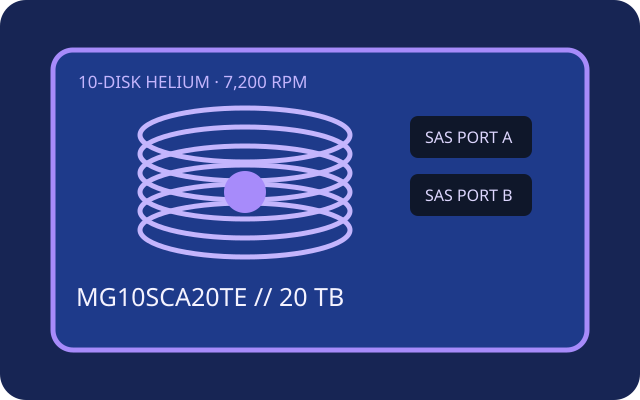

[ IDENTIFIED HDD // MODEL-SPECIFIC RECORD ]
Toshiba MG10SCA20TE
20 TB helium-sealed, 7,200-rpm enterprise nearline HDD with a 12G SAS interface. This is the SAS SKU; SATA MG10 variants are separate products.

Recorded specifications
| Exact model | Toshiba MG10SCA20TE |
|---|---|
| Capacity | 20 TB |
| Sector format | 512e; confirm the logical/physical format on the delivered unit and host |
| Interface / ports | SAS-3, 12 Gbit/s, dual-port |
| Rotational speed | 7,200 rpm |
| Cache | 512 MiB buffer |
| Form factor | 3.5-inch, 26.1 mm height class |
| Workload / reliability | 550 TB/year workload rating; 2.5 million-hour MTBF (manufacturer estimate). Neither figure predicts an individual drive's lifetime; stay within thermal/vibration limits. |
Host compatibility and qualification
- Requires a SAS-capable 12G HBA/RAID controller and SAS backplane or expander; SATA-only controllers/backplanes do not support SAS drives. Check dual-port multipath wiring, carrier height, power and exact firmware support.
- Older SAS links may down-negotiate only when qualified; verify controller maximum capacity, 512e behavior and RAID firmware before use. SATA MG10 line specifications do not establish support for this SAS SKU.
- Annual workload and MTBF are vendor population ratings, not guarantees. Validate the exact sector mode and maintain a rebuild plan and tested independent backups.
Manufacturer sources
- Toshiba — MG10 series product informationManufacturer describes the series and availability of SAS 12.0 Gbit/s models.
- Toshiba — MG10 series launch informationManufacturer announcement; consult the exact ordered SKU documentation for format options.